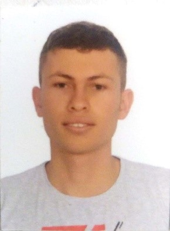

Soy una persona amable, responsable y honesta. En cuanto a mi estudio me he caracterizado por ser dedicado y obtener buenos resultados en lo que hago. Estoy interesado en el aprendizaje continuamente por lo que espero poder aportar en proyectos en los cuales pueda poner en práctica lo que he aprendido dentro de mi carrera profesional.
Termine mi bachillerato en el Institución Educativa la Unión el el 2015
Actualmente estoy cursando el noveno semestre en la Universidad Nacional de Medellin y espero terminas mis estudios en el proximo año
Me considero una persona responsable, honesta y dedicada. Estoy interesado en el aprendizaje continuamente por lo que me motiva participar en proyectos en los cuales pueda poner en práctica lo que he aprendido dentro de mi carrera profesional. Tengo muchas motivación por trabajar y a pesar de mi poca experiencia puedo adaptarme fácilmente a cualquier situación. La creatividad también es una de mis capacidades, siempre busco diferentes perspectivas a la hora de abordar un problema y a partir de eso encontrar la mejor solución posible. Además de mis intereses en el área de la ingeniera eléctrica también tengo habilidades en la programación y me apasiona aprender continuamente nuevas cosas que me ayuden a enriquecer esta capacidad.

En mis tiempos libres me gusta jugar futbol con mis amigos, tambien me gusta viajar conocer nuevas culturas y personas, me intereso por siempre aprender cosas nuevas
para mayor información puede descargas hoja de vida